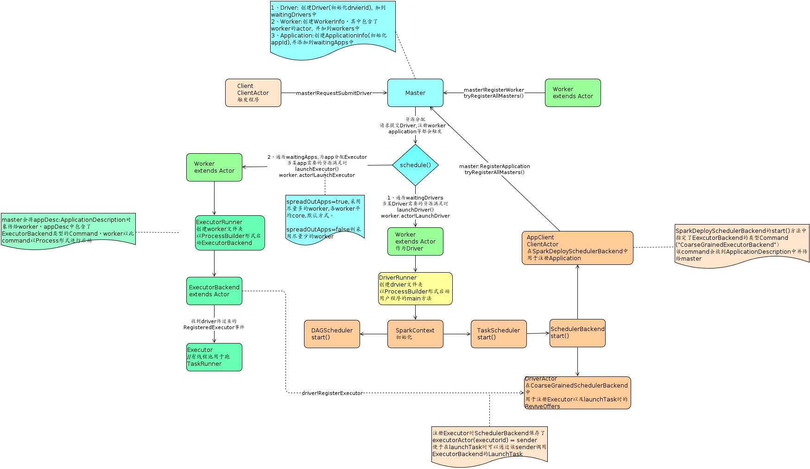
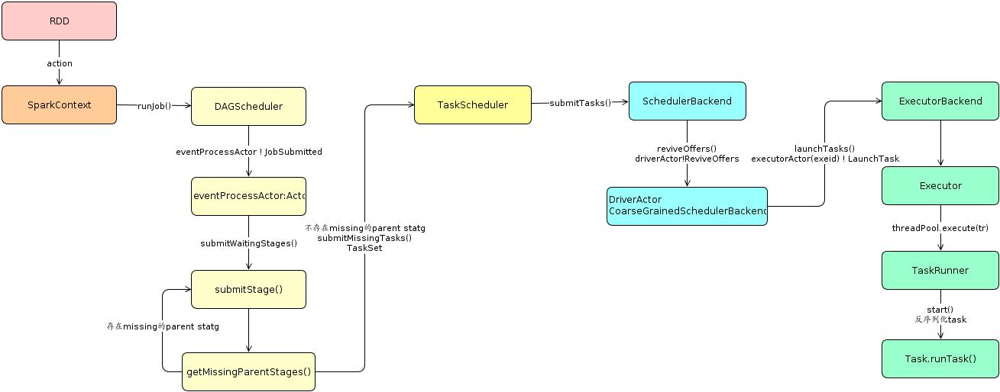
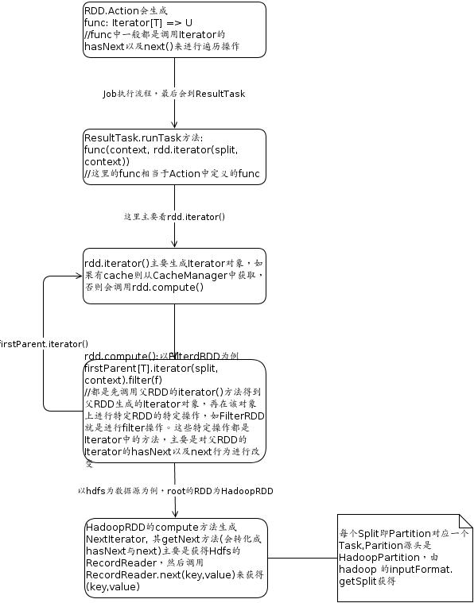

spark相关流程解析
看了spark的部分源码，画了一些流程图，不好分类，就放在一起，以后再分开吧。
note:请右击图片，在新页签打开图片
spark启动流程图

各组件名称说明
- master: 资源管理，分配driver到哪个Worker，分配Executor等。standalone时是设置的7077端口的那台机器, yarn模式时是yarn的resource manager.
- worker: 相当于slave，其作为driver或executor的机器。standalone是注册的worker，yarn时是动态分配的nodemanager。
- driver: 用户写的main函数。spark-submit提交jar时，1.0版本时master会找到一台符合要求的worker(或nodemanager)作为driver，然后这台Worker创建DriverRunner对象来启动一个jvm进程来运行main函数对应的object，1.1版本则是由启动sparkSubmit的机器作为driver，SparkSubmit会通过反射机制来调用应用程序的main方法。
在yarn-cluster时是appmaster,yarn-client时是执行spark-submit的机器。
drvier负责注册application，提交task到相应的executor等，与各executor进行通信。 - application: 每new一个SparkContext就会产生一个application。初始化SparkContext(真实是在SchedulerBackend.start()中)时driver会向master注册application。master会为该application找到符合要求的worker，然后这些worker会创建ExecutorRunner对象来启动ExecutorBackend的jvm进程。
- ExecutorBackend: 具体实现是CoarseGrainedExecutorBackend。主要是创建Executor对象并且与driver进行通信来获得driver提交的任务信息给Executor执行。一个application在相应的worker上只有一个Executor。
- Executor: Task的真正执行者，其维护一个线程池用于跑相应的Task。
- Job: ActiveJob，每个action都会生成一个Job。
- Stage: 一个Job/action中每遇到ShuffleDependency就会有一个stage(ShuffleMapStage)以及finalStage(ResultStage，每个action都会有一个finalStage)。
- Task: 每个分区Partition对应一个task。
spark任务运行流程图

Task遍历分区数据流程

用公司wiki画的，导出来字体有些问题，先将就看吧.上图左边未出来的部分是firstParent